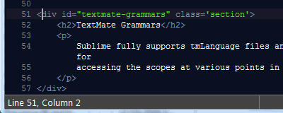

Sublime borrows some concepts from the popular mac only TextMate editor.
While it doesn't have drop-in
support for complete
bundles it does support the open source grammars, snippets
and syntax highlighting themes created by the
TextMate community.
TextMate commands which call out to shell scripts are not supported however Sublime is extensible via python which has good support for calling subprocesses.
IOW TextMate style declarative subprocess extensibility is a subset of the native imperative scripting that Sublime offers. Theoretically, any command could be ported if the desire was great enough. ( Cygwin and SUA can provide *nix compatibility layer on windows)
Sublime fully supports TM's tmLanguage
files when in the xml
format of plist.
Every pt in the document is assigned a scope
The declarative grammars include support for embedded languages ( css inside <style> </style> tags for example. )
|  |
Sublime has python API support for accessing the scopes at various points in the document and also for determining if a selector matches. |
This stylesheet for this very guide is based on the blackboard theme.
Any tmTheme
you find on the internet will be supported and about
20 of the most popular come with the default install.
Currently some of the font styling declarations such as underlining or italics are unsupported.
It has full support for the advanced features such as regex transformation of mirror tab stops.
Many of the snippet oriented $TM_XXX
vars will
be expanded, however `shell code` will not be interpolated (
nor stripped, it will pass through )
displayNamecommand (ctrl+alt+p)
# find the TextMate scope at point 0
# determine if text selector matches
Comments
blog comments powered by Disqus